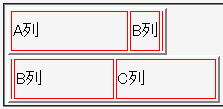

固定レイアウト表（table-layout:fixed;）で、以下の問題が発生する。
<table border="2" style="width:10em; table-layout:fixed;"> <tr> <td style="width:80%;">A列</td> <td style="width:40%;">B列</td> <td style="width:20%;">C列</td> </tr> </table> <table border="2" style="width:10em; table-layout:fixed;"> <tr> <td style="width:50%;">A列</td> <td style="width:6em;">B列</td> <td style="width:6em;">C列</td> </tr> </table>
| A列 | B列 | C列 |
| A列 | B列 | C列 |
1番目の表は列幅の合計が100%を超える場合、2番目の表は列幅の指定値に%単位の値と長さの値が混在する場合の例です。
WinIE6.0標準モード
以下は例示の各表の問題点です（ここでは幅の算出においてボーダーの幅やセル間の距離は考えていません）。
セル要素のoverflowプロパティにvisible値を明示することで内容物が見えない問題は回避することができます。ただし、隣のセルの内容物と重なってしまう場合があります。また、表要素のボックスからはみ出した部分は表示できません（WinIEバグ118）。